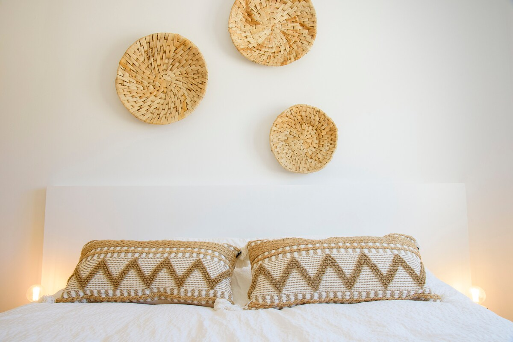
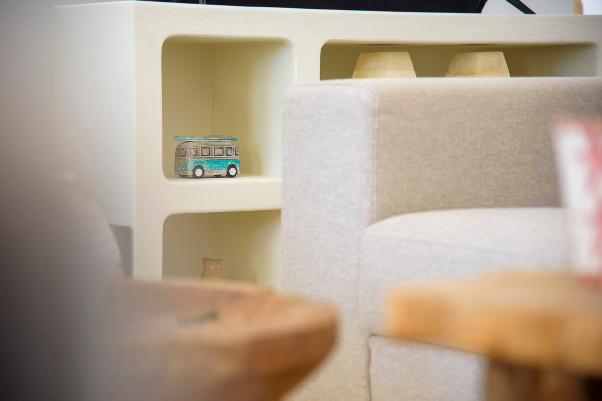

Juli 2026 · Vijf sterren
Carina
Wij hebben een fantastisch verblijf gehad in deze prachtige, luxe villa. Het huis is ruim, sfeervol en met veel aandacht voor detail ingericht. Alles klopt: de mooie inrichting, de geweldige tuin met zwembad en de rustige, luxe uitstraling.
Ook de communicatie met Inge verliep uitstekend. Ze reageerde snel, duidelijk en vriendelijk, zowel voorafgaand aan als tijdens ons verblijf. Bij aankomst werden we hartelijk ontvangen en voelden we ons direct welkom.
Een heerlijke plek om volledig tot rust te komen en te genieten van Moraira en de omgeving. Wij kijken met veel plezier terug op ons verblijf en zouden deze accommodatie absoluut aanraden!


